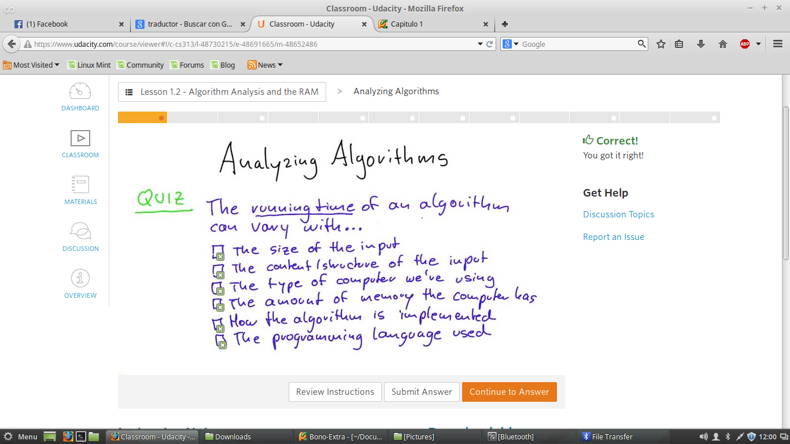
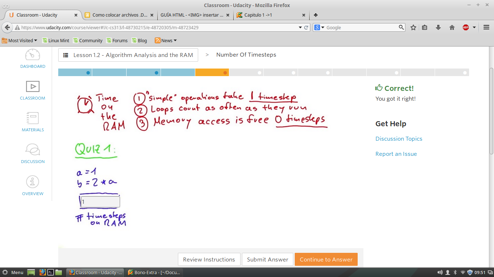
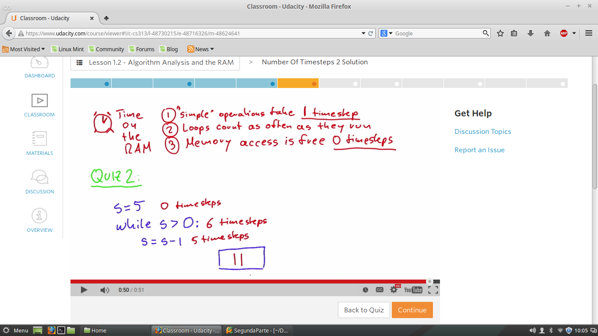
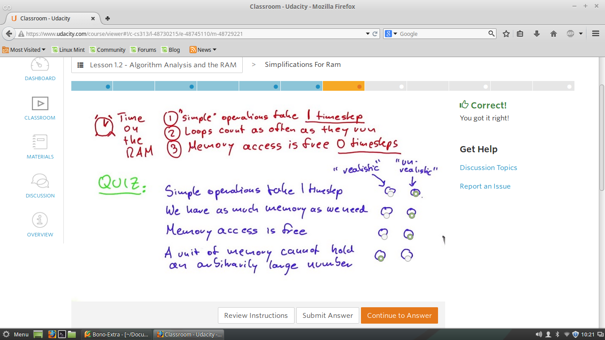
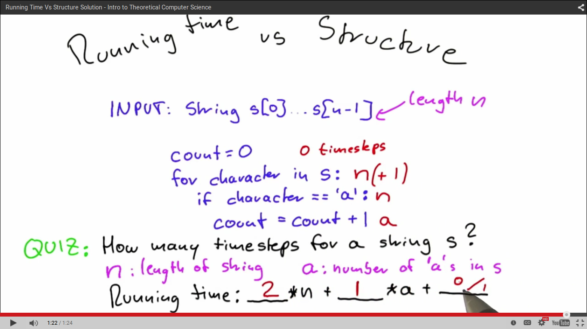
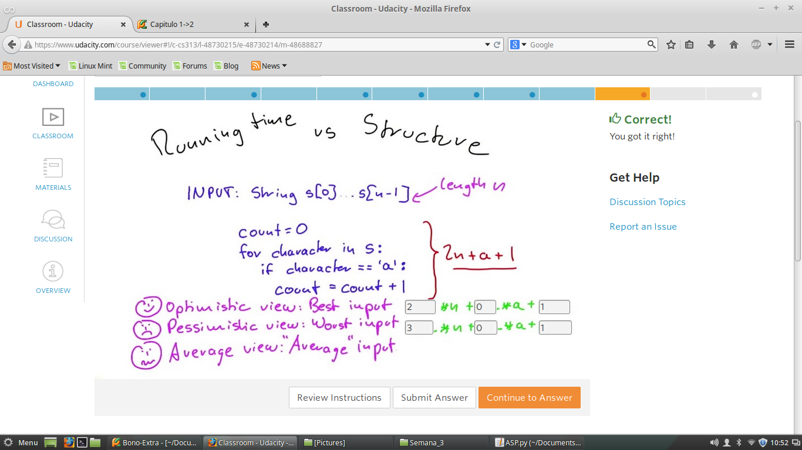
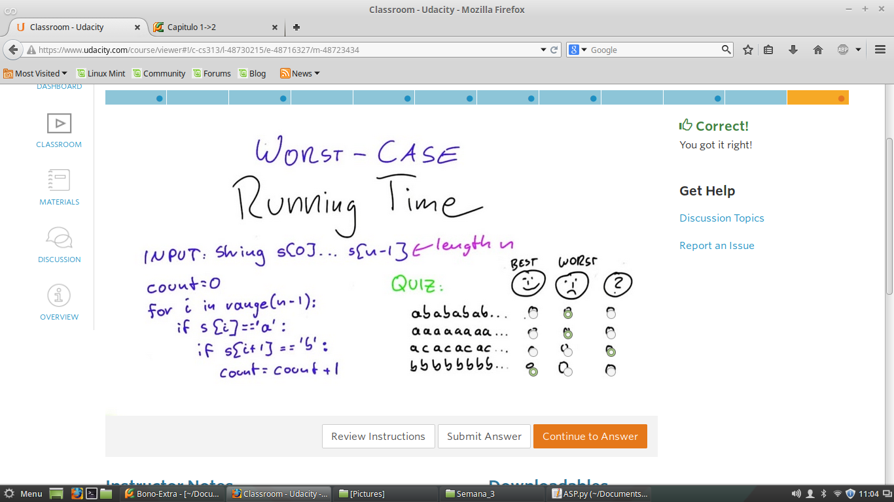

Analisis de Algortmos y de RAM
Notaciones de Big O ->
RAM->
Peor caso ->
Quiz 1 - El tiempo de ejecucion de un algoritmos puede verificarse con

Quiz 2 -RAM
Cuales son los componentes escenciales para tener un modelo informatico,
lo mas simple posible para ejecutar un algoritmo.
RAM
Como los componentes escenciales de un modelo informatico fueron la Memoria, Input/output y Programacion
Ahora los componentes escenciales de el modelo RAM son:
Ramdom
Access
Machine
Quiz 3 - Numero de pasos
Numero de pasos necesarios para ejecutar un programa como el sig.
Teniendo en cuanta los tres Reglas.

Rta: Es de tiempo constante, se cumple la primera regla "Simple"
Quiz 4 - Numero de pasos 2
Numero de pasos necesarios para ejecutar un programa como el sig.
Teniendo en cuanta los tres Reglas.

Rta: Los pasos que se ejecutan, debe tener encuanta las comprobaciones de condicion de ciclo
se va a realizar una vez mas que lo que hay en el cuerpo del ciclo.
Nota: Cumpliendose las tres Reglas
Quiz 5 - El uso de RAM
Analizar de una manera general las diferentes caracterizticas que se cumplan para caada uno de los dos
casos que se exponen de acuerdo con el manejo de entradas a un determinado programa
Teniendo en cuanta los tres Reglas.

Quiz 6 -Teimpo de ejecucion Vs Estructuras
Ahora debemos analizar el tiempo deejecucion de un aloritmos tan simple como este.
Finalmente resolvieendo la formula que me de el tiempo de ejecucion como esta en la figura sig.
Teniendo en cuanta los tres Reglas.

La RTA: viene dada de la siguiente forma: runningtime=2*n+1*a+(0|1)
Quiz 7 -Analisis de el Mejor y el Peor Caso
Debemos encontrar los coeficientes que me describen el Mejor y Poer caso.
Primero cuando tenemos una entrada de tamaño n, y ademas esta no contiene ninguna a, entonces este es el
MEJOR CASO -> runningtime=2*n +0*a+1
Cuando tenemos una entrada de tamaño n, y tenemos la cantidad de caracter (a) igual a N, entonces este es el
PEOR CASO -> runningtime=3*n +0*a+1

Quiz 8 -Clasificacion del tipo de Entrada
No resulta de ningun interes hablar del MEJOR CASO debido que resulta bastante trivial.
CASO PROMEDIO es bastante difil de determinar debido a que no se puede tener garantias del tipo de entradas que vamos a tener en el programa
Pero si analizamos el PEOR CASO tendremos la seguridad que pase lo que pase, se va tener este maximo de tiempo de ejecucion.
Ahora Analizaremos apartir de este algoritmo , cual de las siguientes entradas pertence a uno de los tres tipos de entradas.
